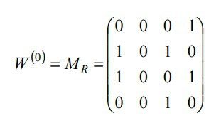
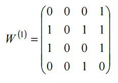
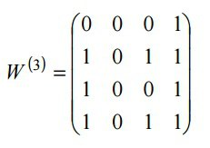
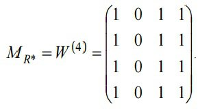

Table of truth
Table of truth — is a mathematical table used in logic—specifically, which sets out the functional values of logical expressions on each of their functional arguments, that is, for each combination of values taken by their logical variables.For creating and filling the table of truth you need:
- Evaluate the number of possible sets of values of the functional variables. If a formula have n different functional variables then the number of possible sets of values will be . This number defines the number of rows in a table.
- Evaluate the number of logical operations in the formula. This number plus the number of logical variables define the number of columns in the table.
- Fill the first n columns with all possible sets of values of logical variables.
- Fill each next column with values from execution of the next logical operation. In the last column of the table there will be all possible values of truth from the given logical formula.
Warshell Algorithm
Warshell Algorithm — it is an effective method of generating a transitive closure on the relation R. The main idea of the algorithm is in transforming inputted matrix MR, which represents the relation R, into output of transposed matrix MR* on the relation R*. R* is the transitive closure from relation R.Examples:
- Animated:

- Step-by-step:    
Binary relations
Binary relation from set A into set B — is the subset R of Cartesin product AxB of these sets:If а and b are in a relation (<, >, <=, >=, =), then write aRb, e.g. on the set {1,3,8} there are these relations: (1,3),(1,8),(3,1),(3,8),(8,1),(8,3).In other words, binary relation from A into B – it is a set of ordered pairs, in which the first element of a pair belongs to set A, аnd the second one – to set B.
Then write aRb if
{(2,6),(4,2),(1,1)} - binary relation.
Binary relations have their own properties:
- reflexivity: if for any number х from the relation there is a pair xRx, then the relation is reflexive, e.g.: {(2,6),(2,2),(6,6)} - is reflexive, but {(2,6),(6,6)} - is not.
- antireflexivity: if for any number x from the relation there is no such pair as xRx, then the relation is antirivlexive, e.g.: {(2,6),(2,2),(6,6)} - is not antireflexive, {(2,7),(6,6)} - is not antireflexive, but {(2,6),(6,7)} {(2,6),(6,6)} - is antireflexive. The relation can be both not reflexive and not antireflexive, but cannot be both reflexive and antireflexive.
- symmetry: a relation is symmetrical if for any pair xRy from the relation there is a pair yxR, e.g.: {(2,6),(6,2)} - is symmetrical, {(2,2),(6,6),(3,3)} - is symmetrical, but {(2,6),(6,6)} - not symmetrical
- asymmetry: a relation is asymmetrical if for any pair xRy from the relation there is no such pair as yRx, e.g.: {(3,6),(6,3)} - is not asymmetrical, {(2,2),(6,6),(3,3)} - is not asymmetrica, but {(2,6),(5,6)} - is asymmetrical.
- antisymmetry: a relation is antisymmetrical if for any pair xRy from the relation there is no such pair as yRx that x is not equal y. That from asymmetrical relation it differs only with that there can be such pairs as (1,1),(5,5),(7,7) and so on. E.g.: {(2,6),(6,3)} - is antisymmetrical, {(2,2),(6,2),(3,3)} - is not antisymmetrical, {(6,5),(5,6)} - is not antisymmetrical.
- transitivity: if there are pairs such as xRy and yRz, then there exists the pair xRz. In this case the relation is transitive. {(1,3),(3,4),(1,4),(10,2500)} - is transitive, but {(10,2),(2,5)} - is not, because there is missing the pair (10,5).
- antitransitivity: if there are such pairs as xRy and yRz, then there is no pair as xRz. In this case the realtion is antitransitive. {(1,3),(3,4),(1,4),(10,2500)} - is not antitransitive, but {(10,2),(2,5)} - is, because there is no pair (10,5).
Combinatorics
Combinatorics (Combinatorical analysis) - is a branch of mathematics concerning the study of finite or countable discrete structures. Aspects of combinatorics include counting the structures of a given kind and size (enumerative combinatorics), deciding when certain criteria can be met, and constructing and analyzing objects meeting the criteria (as in combinatorial designs and matroid theory), finding "largest", "smallest", or "optimal" objects (extremal combinatorics and combinatorial optimization), and studying combinatorial structures arising in an algebraic context, or applying algebraic techniques to combinatorial problems (algebraic combinatorics).The most easiest examples of combinatorical configurations are permutations, arrangements, combinations and partitioning.
-
If order matters - Permutations:
- If the items cannot be repeated:
- If the items can be repeated:
-
If order does not matter - Combinations:
- If the items cannot be repeated:
- If the items can be repeated: